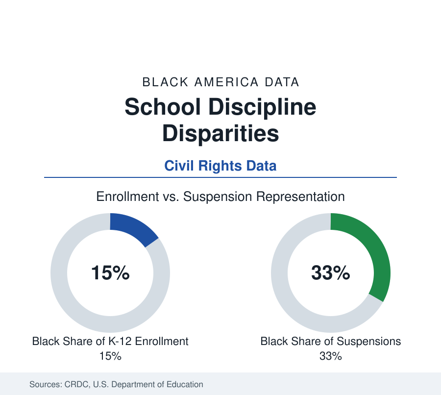

Black Education
School Discipline and Black Students: The Federal Civil Rights Data
Black students are 15 percent of public school enrollment and receive roughly a third of suspensions in the federal Civil Rights Data Collection. The discipline profile.

Black students form about 15 percent of public school enrollment and receive roughly a third of out-of-school suspensions, in the federal Civil Rights Data Collection — the most direct disparity series in the education data, assembled from the discipline records of nearly every public school in the country. The CRDC reports the pattern at every level of the system, from preschool to expulsion, and the Government Accountability Office's analyses confirm it persists within schools and across offense categories. This article reports the discipline data.
The Core Figures
Gender sharpens every figure in the file: Black boys receive the largest share of suspensions of any student group, and Black girls are suspended at rates several times those of girls of any other group — the latter ratio, documented across CRDC editions, is among the widest in the collection and the least discussed in the headline coverage.
The collection's headline relationships have been stable across its recent editions. Black students receive out-of-school suspensions at roughly twice their enrollment share — about a third of suspended students against 15 percent of enrollment — and in-school suspensions, expulsions, and referrals to law enforcement in similarly elevated shares; Black students also form a disproportionate share of students arrested at school and of students restrained or secluded, categories the CRDC added as its scope widened. The preschool file is the series' most striking: Black children form roughly a fifth of public preschool enrollment and, in the collection's editions, close to half of preschoolers suspended — figures describing three- and four-year-olds, reported by their districts, that anchor the literature's argument that the disparity begins before any plausible accumulation of behavioral history.
Within-School and Offense-Level Patterns
The GAO's district-level analysis tested the obvious composition hypotheses and reported the disparity surviving them: Black students were disciplined at higher rates in majority-white and majority-Black schools alike, in wealthy and poor districts alike, and for subjective offense categories (defiance, disruption, disrespect) most steeply, with smaller but persistent gaps for objective categories (weapons, drugs). The research literature's experiments and matched studies converge on a combined account — differential behavior explains a minority of the gap in the careful estimates; differential response to the same behavior, and differential surveillance of the same spaces, explain the remainder — and the reference reports that consensus with its uncertainty intact, noting that behavior data independent of the discipline system itself are inherently scarce.
Consequences in the Outcome Data
Discipline is an education input, and its costs are measurable in the linked datasets: suspended students lose instruction days (the CRDC-derived estimates count millions of days lost nationally, disproportionately Black), and the longitudinal research associates suspension with lower achievement growth, higher dropout probability, and higher later system contact, with the associations persisting after baseline controls — the strongest of them in the quasi-experimental studies of students at the margin of suspension. Alternative-discipline reforms (restorative practices, PBIS, limits on suspensions for low-level offenses, which several states and large districts have adopted) are tracked in the same data: adopting jurisdictions generally show suspension counts falling for all groups with the racial ratios narrowing modestly, and the achievement-side effects contested in a literature still young.
The Special Education Intersection
The discipline and disability files interlock in the CRDC: students with disabilities — among whom Black students are identified at elevated rates in the emotional-disturbance and intellectual-disability categories in the IDEA data — receive suspensions at the highest rates of any student group, and Black students with disabilities sit at the intersection of both elevations, suspended at rates several times the overall student average. The identification side is its own literature (over-identification in subjective categories, under-identification in others, state monitoring under IDEA's significant-disproportionality rule), and the combined file describes a system in which the students with the greatest measured needs receive the most exclusion — the data relationship the reform frameworks in both statutes aim at.
Reading the Discipline Data
The discipline series is the education section's most uncomfortable table precisely because it is the most concrete: not test scores with their interpretive layers, but the system's own administrative acts, counted school by school. Fifteen percent of the students, a third of the suspensions, half of the suspended preschoolers — the reference reports the CRDC as published and lets the ratios stand as the finding.
More in Black Education
Black Educational Attainment: High School Parity, the College Gap
About 89 percent of Black adults hold a high school diploma and one in four holds a bachelor's degree or higher — the attainment ladder, the college completion gap, and the generational trend.
Historically Black Colleges and Universities: Enrollment and Degrees
More than 100 HBCUs enroll roughly 290,000 students and award about one in six Black bachelor's degrees — an outsized share from a small sector. The federal education data.
Black College Enrollment: 2.4 Million Students
About 2.4 million Black students are enrolled in American colleges — nearly two-thirds of them women. The NCES enrollment data by sector, level, and trend.
Source: U.S. Department of Education, Office for Civil Rights, Civil Rights Data Collection (CRDC); Government Accountability Office discipline analyses.